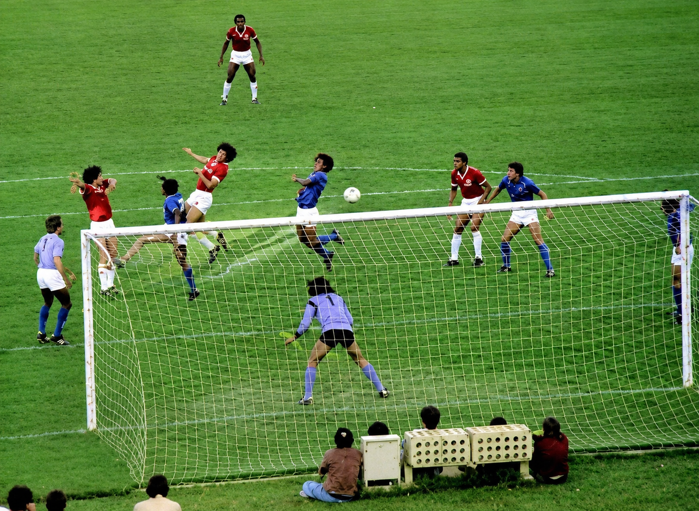
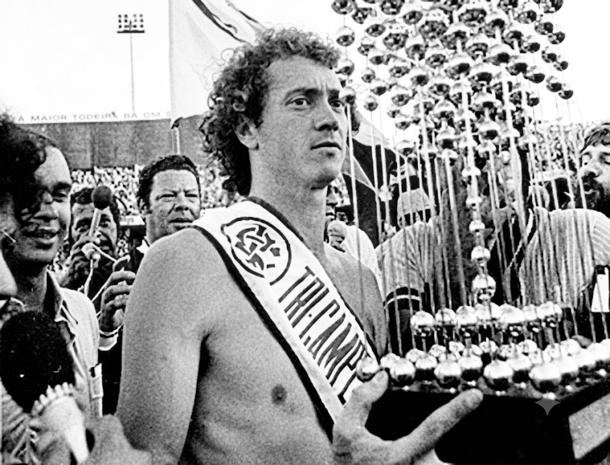

O domínio colorado no futebol brasileiro
O Sport Club Internacional é um dos clubes mais tradicionais do país e possui três títulos do Campeonato Brasileiro. As conquistas de 1975, 1976 e 1979 marcaram uma das maiores gerações da história colorada e ajudaram a transformar o clube em uma potência nacional.
🏆 Campeonato Brasileiro de 1975
O primeiro título brasileiro do Internacional veio em 1975. Na grande decisão disputada no Beira-Rio, o Colorado derrotou o Cruzeiro por 1 a 0, com o histórico gol de Elias Figueroa. A conquista encerrou um longo período de espera e colocou o clube definitivamente entre os grandes vencedores do futebol brasileiro.

A campanha foi marcada pela força coletiva da equipe e pelo talento de jogadores que entraram para a história do clube. O título representou um marco para a torcida colorada, que viu o Internacional conquistar pela primeira vez a principal competição nacional.
🏆 Campeonato Brasileiro de 1976
No ano seguinte, o Internacional mostrou que o sucesso não havia sido por acaso. Com um elenco extremamente qualificado, o clube voltou a realizar uma campanha brilhante e chegou novamente à decisão, desta vez contra o Corinthians.
Na final, disputada no Beira-Rio, o Colorado venceu por 2 a 0 e conquistou o bicampeonato nacional. O time demonstrou um futebol dominante e confirmou sua posição como a principal força do futebol brasileiro naquele período.
🏆 Campeonato Brasileiro de 1979
A terceira conquista entrou para a história do futebol brasileiro. Em 1979, o Internacional realizou uma campanha simplesmente inesquecível e conquistou o campeonato de forma invicta, um feito que permanece único até hoje.

Liderado por craques como Paulo Roberto Falcão, Mário Sérgio, Batista e Jair, o Colorado derrotou o Vasco da Gama na decisão e levantou seu terceiro troféu nacional. Nenhuma equipe conseguiu repetir a façanha de conquistar um Campeonato Brasileiro invicta da mesma forma que o Internacional fez naquele ano.
Os títulos de 1975, 1976 e 1979 ajudaram a construir a identidade vencedora do clube e são lembrados até hoje como uma das épocas mais gloriosas da história colorada. Aquela geração não apenas venceu, mas também deixou um legado que ajudou a transformar o Internacional em um dos maiores clubes do Brasil.